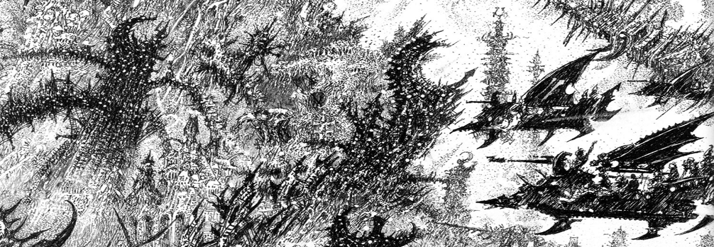

Добро пожаловать в Комораг!

Это история об олицетворениях зла. Тёмные эльдар воплощают
в себе все развратные и жестокие наклонности древней расы, от которой они происходят.
Жутко сообразительные и
дьявольски хитрые, эти пираты-налётчики наслаждаются
болью, потому как подпитка за счет чужих страданий является единственным
способом, благодаря которому они могут
отсрочить мучительную смерть
собственных душ. Тёмные эльдар считают себя истинными наследниками древней
империи эльдар, они свысока смотрят на всех, как на трусов
или тупоголовых
жертв. Безграничный и исключительный потенциал их рода направлен на самые
ужасные цели, какие они только могут вообразить. По причине того, что
они
живут тысячелетия, в распоряжении тёмных эльдар есть время всей вселенной
для доведения до совершенства своих мрачных искусств.
Dark Eldar
City Areas of Comoragh
Добро пожаловать! :)